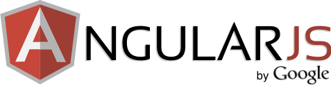

<div class="container body-content animated fadeIn slower delay-3s">
    <article id="article-tech-stack-angularjs">
        <section id="section-tech-stack-angularjs">
            <div class="row">
                <div class="col-md-4 order-md-2 mb-4 mb-md-0">

                    <div class="card mb-4">
                        <div class="card-body">
                            
                        </div>
                        <div class="list-group list-group-flush">
                            <a ng-repeat="link in $ctrl.knowledgeBase[0].links" class="list-group-item list-group-item-action py-2" href="{{link.url}}" target="_blank">{{link.title}}</a>
                        </div>
                    </div>

                    <h5>Guides</h5>

                    <div class="list-group">
                        <a ng-repeat="link in $ctrl.techStackAngularjs.techStack.links" class="list-group-item list-group-item-action py-2" href="{{link.url}}">{{link.title}}</a>
                    </div>

                    <hr class="mt-4 mb-4" />

                    <h6>Download AngularJS Seed App</h6>

                    <ul class="list-unstyled ml-2">
                        <li><a href="https://github.com/angular/angular-seed/archive/master.zip">Download zip file</a></li>
                    </ul>

                    <hr class="mt-4 mb-4" />

                    <h6>Clone from github</h6>

                    <ul class="list-unstyled ml-2">
                        <li><a href="https://git-scm.com/downloads" target="_blank">Download git</a> - You need git to clone the angular-seed repository.</li>
                        <li><a href="https://nodejs.org/" target="_blank">Download node.js</a> - You must have Node.js and its package manager (npm) installed.</li>
                    </ul>

                </div>
                <div class="col-md-8 order-md-1">

                    <h1>{{$ctrl.knowledgeBase[0].title}}</h1>

                    <p class="lead font-weight-light">{{$ctrl.knowledgeBase[0].subTitle}}</p>

                    <p>{{$ctrl.knowledgeBase[0].text}}</p>

                    <p><a href="https://docs.angularjs.org/misc/started" target="_blank">https://docs.angularjs.org/misc/started</a></p>

                    <hr class="mt-4 mb-4" />

                    <h2>Create AngularJS Application</h2>

                    <p>
                        <i class="fa fa-github align-middle text-muted mr-2 fa-2x"></i>
                        Download or clone the <a href="https://github.com/angular/angular-seed" target="_blank">AngularJS seed app</a> to get started quickly.
                    </p>

                    <p>
                        The seed contains a sample AngularJS application and is preconfigured to install the AngularJS framework and a bunch of development and testing tools
                        for instant web development gratification.  The seed app doesn't do much, just shows how to wire two controllers and views together.
                    </p>


                    <hr class="mt-4 mb-4" />


                    <h3>Clone Angular seed</h3>

                    <code>
                        git clone --depth=1 https://github.com/angular/angular-seed.git <your-project-name>
                    </code>


                    <hr class="mt-4 mb-4" />


                    <h3>Install Dependencies</h3>

                    <code>
                        npm install
                    </code>

                    <div class="alert alert-info small">
                        <i class="fa fa-exclamation-circle mr-2 fa-2x align-middle"></i>Note copying the AngularJS files from node_modules to app/lib makes it easier to serve the files by a web server.
                    </div>

                    <h4>Install jQuery CDN</h4>

                    <code>
                        &lt;script src="https://code.jquery.com/jquery-3.2.1.slim.min.js" integrity="sha384-KJ3o2DKtIkvYIK3UENzmM7KCkRr/rE9/Qpg6aAZGJwFDMVNA/GpGFF93hXpG5KkN" crossorigin="anonymous"&gt;&lt;/script&gt;
                    </code>

                    <h4>Bootstrap 4 CDN</h4>
                    <code>
                        &lt;link rel="stylesheet" href="https://maxcdn.bootstrapcdn.com/bootstrap/4.0.0/css/bootstrap.min.css" integrity="sha384-Gn5384xqQ1aoWXA+058RXPxPg6fy4IWvTNh0E263XmFcJlSAwiGgFAW/dAiS6JXm" crossorigin="anonymous"&gt;
                        <br />
                        <br />
                        &lt;script src="https://cdnjs.cloudflare.com/ajax/libs/popper.js/1.12.9/umd/popper.min.js" integrity="sha384-ApNbgh9B+Y1QKtv3Rn7W3mgPxhU9K/ScQsAP7hUibX39j7fakFPskvXusvfa0b4Q" crossorigin="anonymous"&gt;&lt;/script&gt;
                        <br />
                        &lt;script src="https://maxcdn.bootstrapcdn.com/bootstrap/4.0.0/js/bootstrap.min.js" integrity="sha384-JZR6Spejh4U02d8jOt6vLEHfe/JQGiRRSQQxSfFWpi1MquVdAyjUar5+76PVCmYl" crossorigin="anonymous"&gt;&lt;/script&gt;
                    </code>

                    <hr class="mt-4 mb-4" />

                    <h3>Run the Application</h3>

                    <code>
                        npm start
                    </code>

                    <p>
                        Now browse to the app at <a href="localhost:8000/index.html" target="_blank">localhost:8000/index.html</a>.
                    </p>

                    
                    <hr class="mt-4 mb-4" />

                    
                    <section id="tabbedContent">
                        <h3>Read more</h3>
                        <p>
                            The AngularJS documentation includes the
                            <a href="https://docs.angularjs.org/guide/index" target="_blank">Developer Guide</a>
                            covering concepts and the <a href="https://docs.angularjs.org/api" target="_blank">API Reference</a> for syntax and usage.
                        </p>
                        <ul class="nav nav-tabs" id="myTab" role="tablist">
                            <li class="nav-item">
                                <a class="nav-link"
                                   ng-class="{'active': $ctrl.showTab=='getting-started'}"
                                   data-ng-click="$ctrl.ShowHideTab($event)"
                                   href=""
                                   data-category="getting-started"
                                   role="tab"
                                   aria-controls="getting started"
                                   aria-selected="true">
                                    Getting started
                                </a>
                            </li>
                            <li class="nav-item">
                                <a class="nav-link"
                                   ng-class="{'active': $ctrl.showTab=='videos'}"
                                   data-ng-click="$ctrl.ShowHideTab($event)"
                                   href=""
                                   data-category="videos"
                                   role="tab"
                                   aria-controls="videos"
                                   aria-selected="false">
                                    Videos
                                </a>
                            </li>
                        </ul>
                        <div class="tab-content">
                            <div class="tab-pane"
                                 ng-class="{'active': $ctrl.showTab=='getting-started'}"
                                 role="tabpanel"
                                 aria-labelledby="getting-started-tab">
                                <ol>
                                    <li>
                                        <a href="https://docs.angularjs.org/guide/concepts" target="_blank">Read the conceptual overview</a>.
                                        <br />
                                        Understand AngularJS's vocabulary and how all the AngularJS components work together.
                                    </li>
                                    <li>
                                        Do the <a href="https://docs.angularjs.org/tutorial/" target="_blank">AngularJS Tutorial</a>.
                                        <br />
                                        Walk end-to-end through building an application complete with tests on top of a node.js web server. Covers every major AngularJS feature and shows you how to set up your development environment.
                                    </li>
                                    <li>
                                        Download or clone the <a href="https://github.com/angular/angular-seed" target="_blank">Seed App project template</a>.
                                        <br />
                                        Gives you a starter app with a directory layout, test harness, and scripts to begin building your application.
                                    </li>
                                </ol>
                            </div>
                            <div class="tab-pane"
                                 ng-class="{'active': $ctrl.showTab=='videos'}"
                                 role="tabpanel"
                                 aria-labelledby="videos-tab">
                                <ol>
                                    <li><a href="http://www.youtube.com/watch?v=WuiHuZq_cg4&list=PL173F1A311439C05D&context=C48ac877ADvjVQa1PpcFONnl4Q5x8hqvT6tRBTE-m0-Ym47jO3PEE%3D" target="_blank">Introduction to AngularJS</a></li>
                                    <li><a href="http://www.youtube.com/watch?v=Yg-R1gchccg&list=PL173F1A311439C05D&context=C48ac877ADvjVQa1PpcFONnl4Q5x8hqvT6tRBTE-m0-Ym47jO3PEE%3D" target="_blank">Creating Directives</a></li>
                                    <li><a href="http://www.youtube.com/watch?v=IRelx4-ISbs&list=PL173F1A311439C05D&context=C48ac877ADvjVQa1PpcFONnl4Q5x8hqvT6tRBTE-m0-Ym47jO3PEE%3D" target="_blank">Communicating with Servers</a></li>
                                    <li><a href="http://www.youtube.com/user/angularjs" target="_blank">YouTube channel</a> for more AngularJS video presentations and tutorials.</li>
                                </ol>
                            </div>
                        </div>
                    </section>

                </div>
            </div>
        </section>
    </article>
</div>     